The director's desk
Where a game is plotted, blocked and played before Unreal builds it. Built to feel like RPG Maker: you drag things where they go, pick from lists and pictures, and every command reads as a sentence. Nothing is typed as JSON. This guide walks through it in the order you'd use it.
1Opening the desk
Start the desk's server from the project folder, then open http://127.0.0.1:8780
in your browser. The launcher does it for you: ./studio lists every tool, and the desk is one number.
./studio # the launcher: pick the desk python tools/director/serve.py # or the desk on its own (DESK_PORT=8781 for a second one)
Pick the game in the top left (or + New for a new one). The desk remembers the last game you had open.
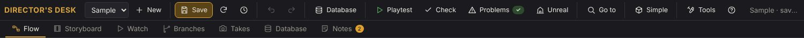
Flow
The board of the whole game, the inspector for what's picked, the stage under the board.
Storyboard · Branches
Every node in order as frames from the player's eye; the paths through the game.
Watch
The game played: scenes as an animatic, tasks walked in Play mode.
Takes · Database · Notes
Every take to record; the game's tables; the notes between you and Claude.
2The flow board
The game is a board of cards wired together: scenes (the actors perform), tasks (the player plays), choices and endings. A scene's card shows a frame of what the player sees and the faces of who's in it.
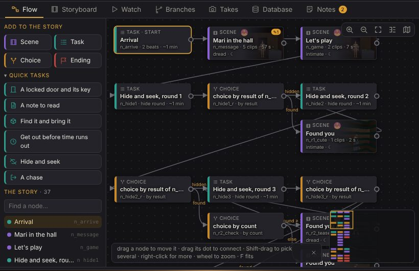
- Add a card: drag Scene, Task, Choice or Ending from the left onto the board, or double-click empty space.
- Connect two cards: drag a card's dot (●) onto the next card. Let go on empty space and a new card is made there, already connected.
- Move: drag a card. Its place is kept in the story, so the board looks the same next time.
- Pick several: Shift+drag a box around them, or Ctrl+click one more. They move, copy and delete together.
- Look around: the wheel zooms, dragging the background pans, F fits everything, M shows the minimap (click it to jump).
- Click a card to edit it in the inspector on the right; the stage below shows it.
Right-click, copy and paste
Right-click a card (or the empty board) for what you can do there: watch from it, make it the start, copy, paste, duplicate, rename, make an act, delete. Ctrl+C, Ctrl+V and Ctrl+D work on whatever's picked: cards, a scene's lines, beats, commands. A copy keeps the links inside it and gets new ids where they must be unique, and it pastes into another game too.
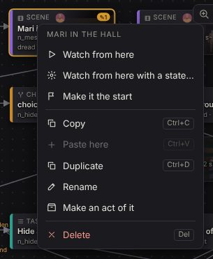
3Quick tasks and acts
The common shapes of play are one drag: under Quick tasks, drag A locked door and its key, A note to read, Find it and bring it, Get out before time runs out, Hide and seek, A chase, Someone asks for something, or one of a night shift's: A chore: clean up a mess (a stain scrubbed away, on the to-do list), A chore: lock the door (its latch), The power cut (find the breaker box in the dark) and A knock at the door (look through its peephole) onto the board (or click one). Fill in a few blanks (the key, the door, the room behind it) and the dialog shows what it'll make: a task with its beats, ready to change. A blank left empty shows up in Problems.
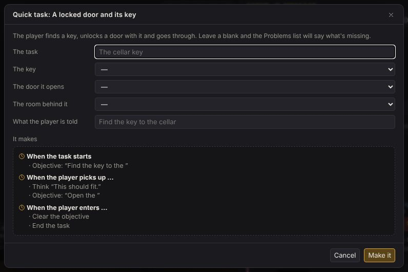
Inside a task, Quick beat does the same for one moment: a jump scare on entering, a knock, the lights dying, a door slamming behind, a whisper when looked at, a line on entering, a checkpoint, the flashlight flickering or dying.
Acts
Pick a few cards and right-click: Make an act draws a coloured frame behind them with a title. Drag the title to move the act with its cards, drop a card in to add it, fold it to a single card to tidy the board (double-click a folded act to open it).
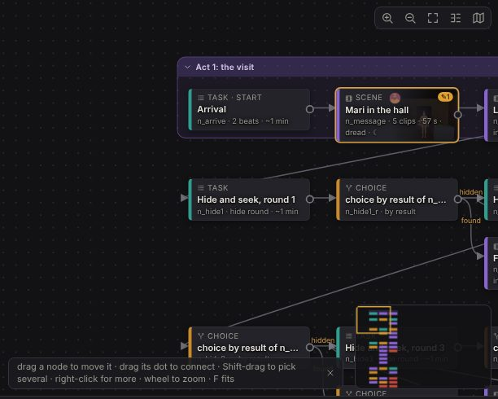
4A scene as a script
Click a scene's card and the inspector shows it as a script: a row a line, like RPG Maker's message list. Each row has a picture of what the player sees on that line (click it to show it on the stage), who speaks with their face, the words in English and Japanese, and chips for what's set: the shot, the seam into it, the take, the motion, an event, a reply. The number on the right is its length; red means it's longer than a take can be.
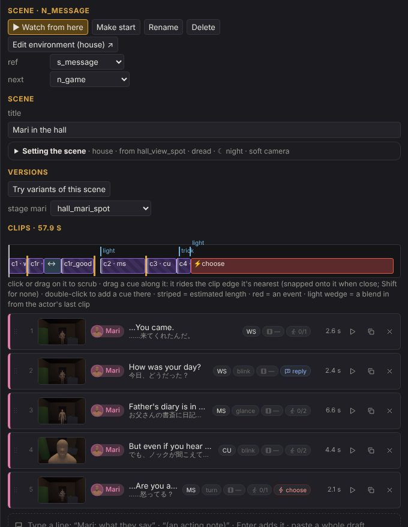
- Open a line: click its row. Its settings are in tabs: Line (who, words, the acting note), Take, Camera (what the head follows, the shot, the seam, a lean in), Body, Event (a quick-time event) and Reply (a hanging line the player answers).
- Reorder: drag a row by its grip (⋮⋮).
- Setting the scene (folded at the top): its level, where the player stands, their stance, the mood, the time of day, the camera.
- Versions: Try variants of this scene keeps several takes on it side by side.
5Typing a scene
Under the script there's a box: type a line the way a script is written and press Enter. The box keeps the focus, so you can write a whole scene without touching the mouse.
Mari: Did you hear that? [CU] a line, with a shot at the end (she glances at the cellar door) an acting note for the line before it You: Hear what? You, Me or I is the player Mari: 来てくれたんだ。 / You came. Japanese (what's recorded) and English
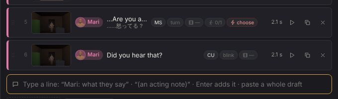
Edit as text opens the whole scene this way. Change it, add to it, paste a draft in: the right side shows what you'll get, line by line, and what applying it does. Lines still there keep everything they had (the take, the body, the camera); an edited line keeps its clip with the new words; a new line is a new clip. Pasting several lines into the box opens this too.
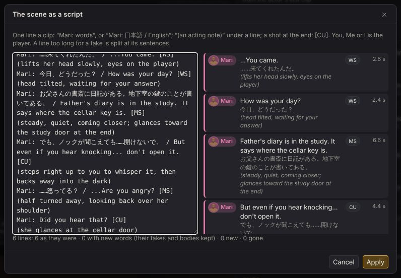
6Takes and the waveform
Drop a take's video (or audio) on its line, or on the Take tab. It's stored as the take for that line, measured, and the dead air at both ends is trimmed. The Takes view lists every take still to record, with the MiniMax prompt for each; dropping a pile of files there matches each to its line by name.
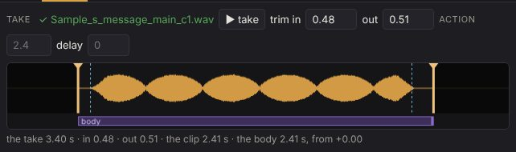
- Trim: drag the orange handles over the dead air. They snap to where the voice starts and stops (the dashed blue lines); hold Shift not to snap.
- Line the action up with the voice: drag the purple body bar to start the movement later, or its right end to make it shorter.
- Listen: double-click the waveform to play from there to the out point.
7The timeline and cues
Above the script is the scene's timeline: the lines as blocks, the seams between them, events in red, replies, and the cues above. Click or drag on it to scrub the stage.
Cues are things that happen at a moment of the scene: a sound, a light, a door. Drag one along the timeline and it rides the edge of the line it's dropped nearest, snapped onto it when close (the label says where: "the start of c3"). Double-click the timeline to add a cue there and pick what it does. Cues never sit at a time of their own, so a longer take carries them with it.
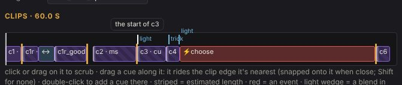
8Blocking on the stage
The stage under the board shows the scene from the player's eye. ▶ scene plays it, the slider scrubs it, Free cam lets you fly around the set (drag to orbit, wheel to zoom).
- Drag someone across the floor to put them somewhere. Rings show the level's marks; let go near one and they stand on it, or anywhere else for a new mark there, turned to face the player.
- Right-click the floor: put someone here, the player stands here, a new mark for later, or a little thing.
- Right-click someone: the camera follows them, or take them off the stage. Right-click a thing: the camera follows it, or put someone beside it.
- From the free camera the player is an orange marker: drag it to where the scene is seen from.
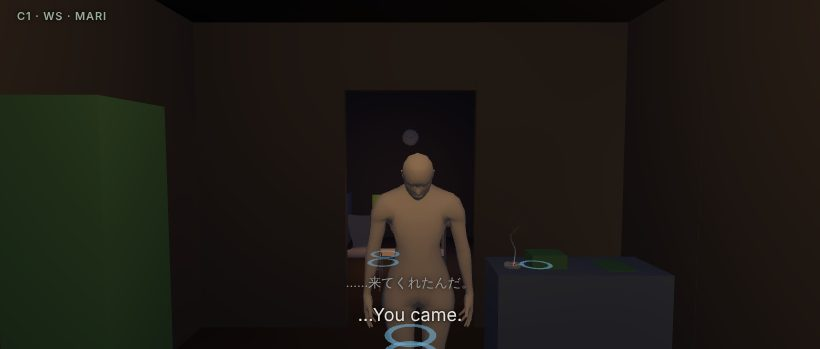
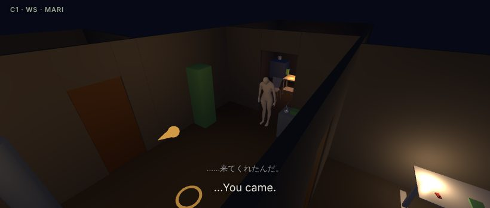
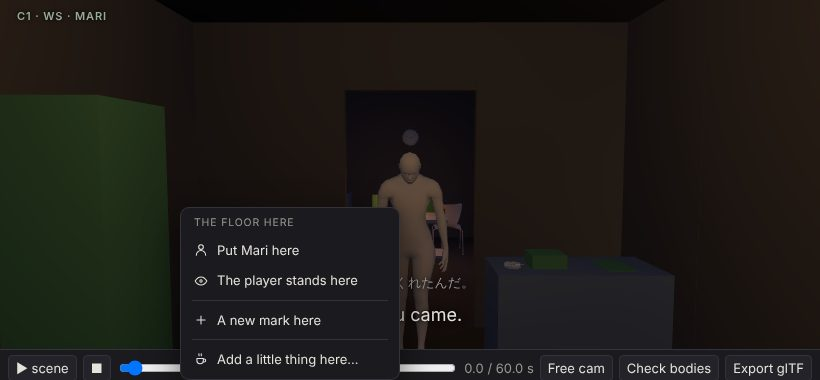
Everything you do here is ordinary story: who stands on which mark, where the player is, what the camera follows. Ctrl+Z takes any of it back.
9Bodies, poses and motions
A line's Body tab says what the actor does. Until the real motion is made, the desk plays blocking: a pose at a few moments of the line, eased between. Click a pose to pick another from pictures.
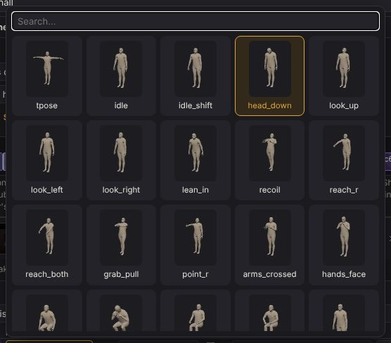
- Kimodo motions: the motion picker shows the motions already made as pictures of the body at four moments. The Kimodo shot list (Tools) lists what's still to make.
- Segments chain several Kimodo motions in one line; layers lay a part of the body (the arms, the head) from another motion or pose over it.
- Reusable motions live in the Database: an idle, a search walk, a count with the eyes covered. Each shows as a picture of its take, or of its stand-in blocking until it's made.
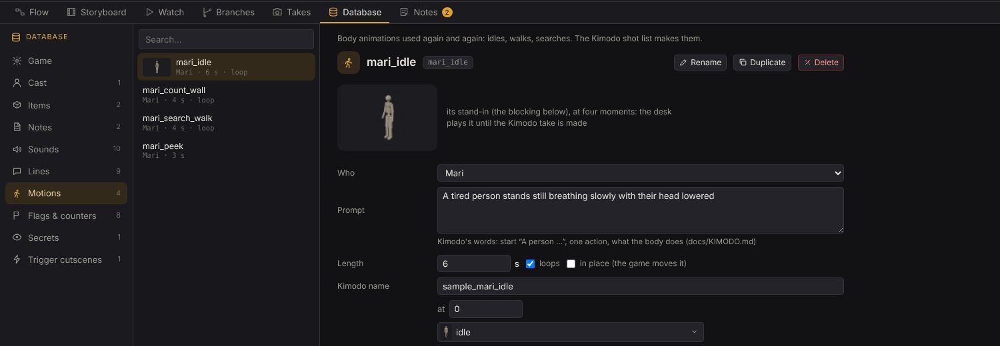
10Tasks: beats and commands
A task is what the player does between scenes, written like RPG Maker's event pages. Each beat is "when this happens, do these": its pill says when (the task starts, the player enters the kitchen, picks up the key...), and under it, the commands in order, each reading as a sentence.
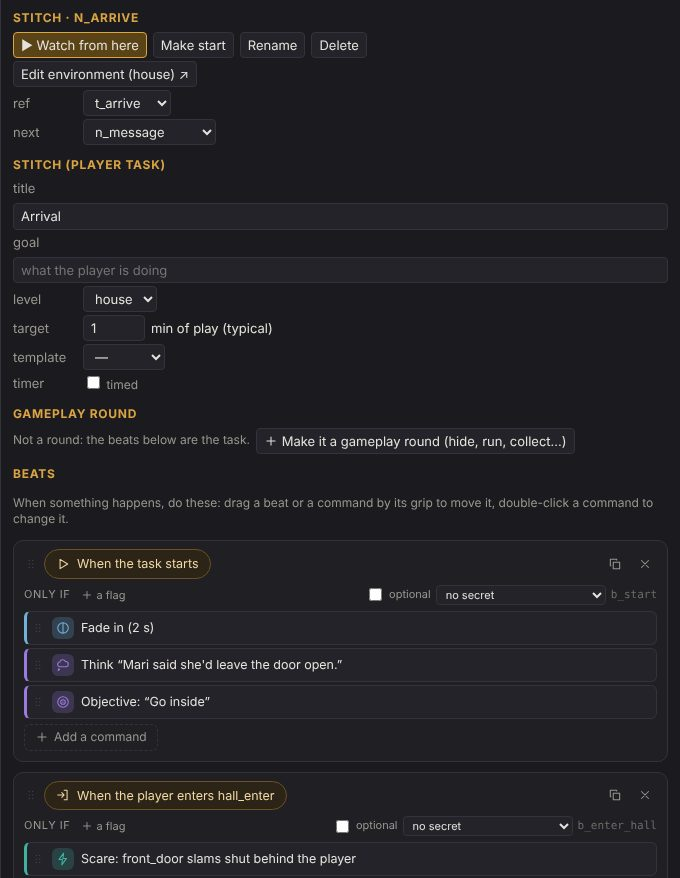
- Click a pill to choose when the beat happens. Only if adds a flag it waits for.
- + Add a command opens the palette: commands by group, type to search, Enter picks.
- Double-click a command to change it. Drag commands and beats by their grips, into another beat too.
- Every blank is a list of what exists: lines, items, doors, spots, flags. People are picked by their face. If it isn't there yet, + New… at the end makes it on the spot.
- Make it a gameplay round turns a task into hide and seek, a chase, a collect... with a timer and results that branch.
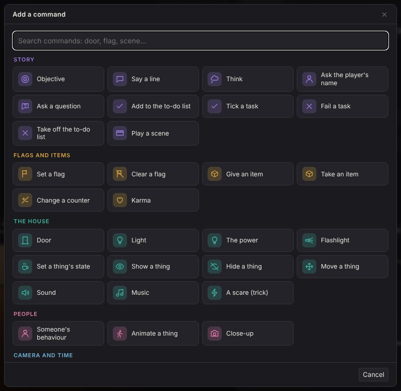
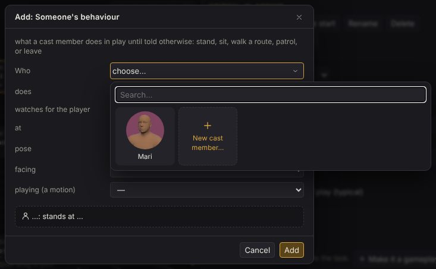
11Little things
A kettle that boils by itself, a cup of tea going cold, a cigarette burning down in an ashtray, a clock ticking, a phone that rings, a TV of static: the little things that make a room somebody's. Each one has a life: the states it goes through (a kettle heats, boils and clicks off by itself), what it shows in each (steam, smoke, an ember, a glow, its LEDs), its sound in the room, and what the player can do to it in play (a click: switch it on, drink, put it out).
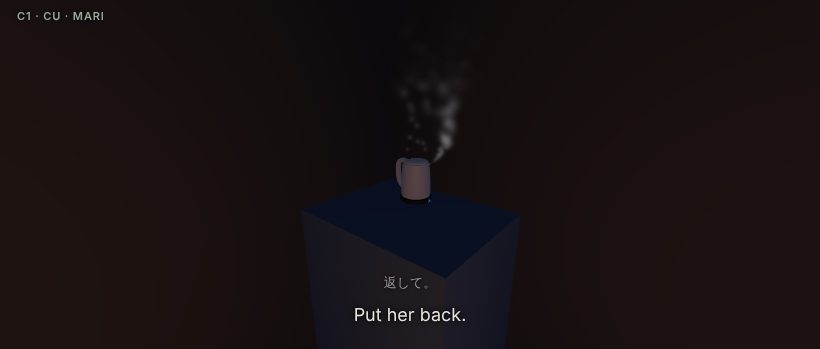
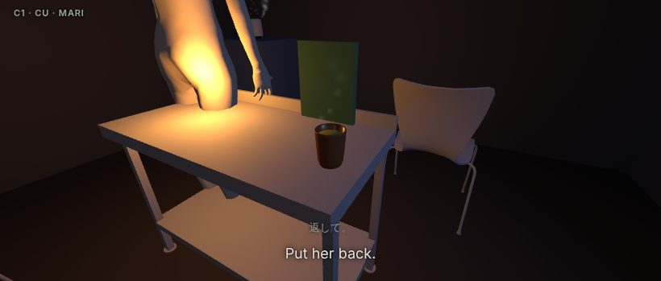
- Right-click a table, a counter or the floor on the stage: Add a little thing here… picks one from pictures. It lands where you clicked, on what you clicked, its front turned to the player.
- Right-click a little thing: It starts … sets the state it's in when the game gets there: the kettle already boiling, the cigarette lit, the clock stopped.
- The story changes them: the command Set a thing's state (the kettle on, the phone ringing) and the trigger A thing is in a state (when the kettle has boiled). The thing is picked by its picture, then one of its states.
- Quick beats do the common ones in one go: a kettle put on, a cigarette still burning, the phone rings, the TV comes on by itself, the clock stops.
- In the Watch and in play they keep time: a kettle put on boils a little later, a cigarette burns down, tea poured cools. Their sounds are made in the browser and come from where the thing is; things' sounds in the Watch turns them off.
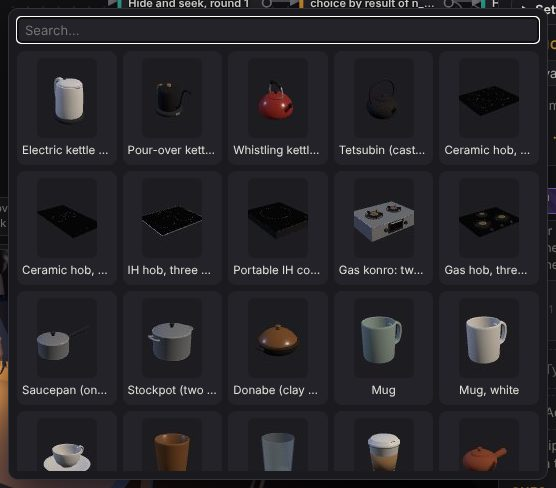
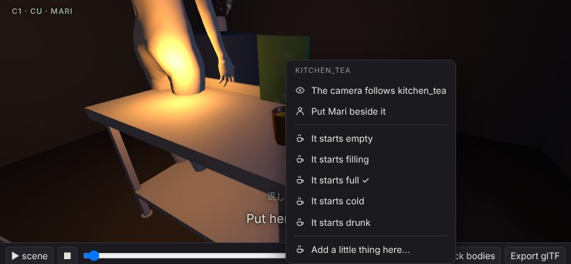
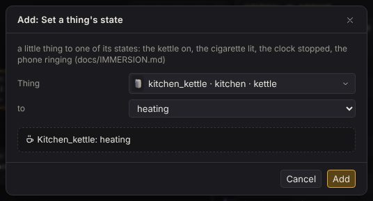
Content/Studio/Life/lives.json, docs/IMMERSION.md.12The Database
The game's own tables, as tabs: the game's settings, the cast, items, notes, sounds, lines, motions, flags and counters, secrets and trigger cutscenes. Each is a list and a form.
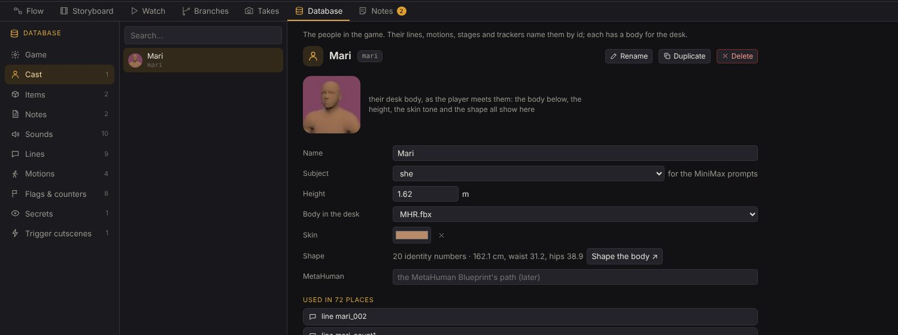
- Used in… lists every place an entry is used; click one to go there.
- Rename gives it a new id and changes it everywhere it's used.
- A cast member's portrait follows their body, height, skin tone and shape as you change them.
13Playtesting
Playtest plays the game from the start in the Watch; ▶ Watch from here (on a card, or its right-click menu) starts anywhere. Scenes play as an animatic with their takes; with walk the tasks ticked, you play the tasks yourself: WASD to move (Shift to run), the mouse to look, a left click to use anything, E to show or hide the inventory (the wheel turns it), G to put down what's in your hand, C to crouch, F for the flashlight once you have one, Esc to pause (the controls are on the pause menu's left). Hold the click on a stain to scrub it away; click a door's peephole to look through it; a breaker box brings the power back after a cut; a door's latch (the thumb turn inside) locks it.
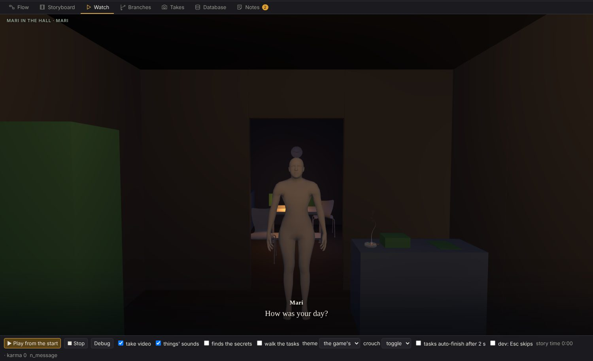
The debug panel
F9 (or Debug) shows every flag, counter, karma and item, live while it plays, and the beats as they fire (click one to open it). Before it plays, it's the state a playthrough starts from: tick the flags, set the counters, pick a node, Play from there.
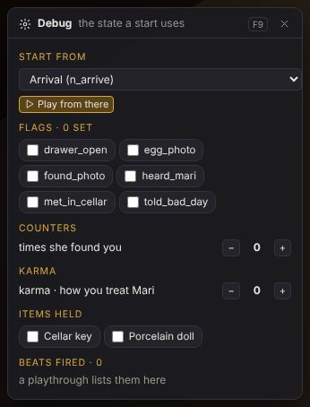
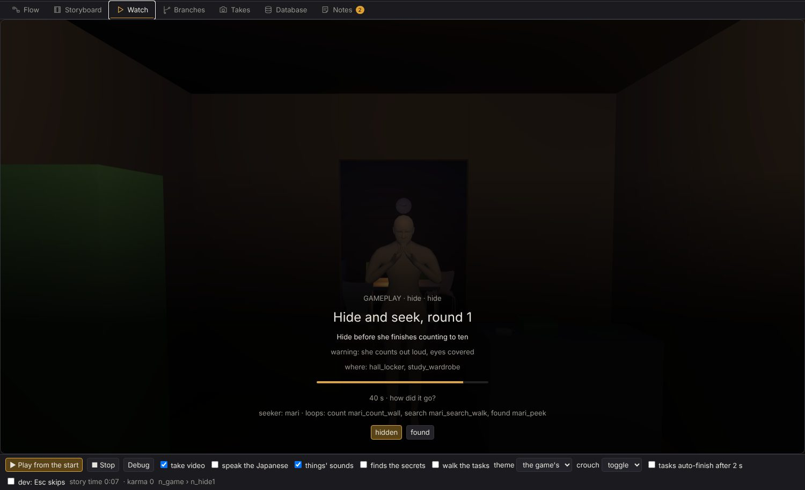
14Problems and checks
The desk checks the story as you edit. The Problems button counts what's wrong (a line by someone not in the cast, a beat that waits for a flag nothing sets, a door locked by an item that doesn't exist); click one to go straight there. Cards and lines with a problem show a badge.
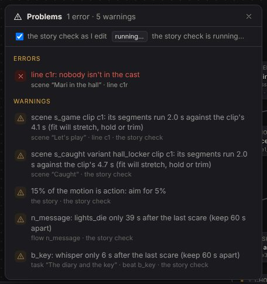
Check runs the full story and level checks on the saved story (it saves first).
15Go to anything
Ctrl+K (or Go to) is one search box over the whole game: cards, every line by its words in English or Japanese, beats by when they fire and what they do, the Database's entries, flags, and the desk's own actions (Playtest, Save, Check, the tools). Arrows and Enter go there.
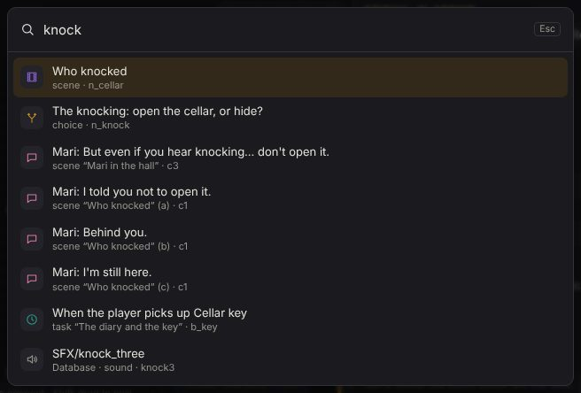
16Working beside Claude
Claude edits the same story.json you do. When it (or another window, or the scene builder) saves, the
desk merges those changes with yours and tells you what changed, with an Undo. Only when you
both changed the same thing does it ask which to keep.
Leave Claude a note on any card (the inspector's notes, or the Notes view); Claude answers there and ticks what it's done.
17Nothing gets lost
- Undo everything: Ctrl+Z, 150 edits back; Ctrl+Shift+Z redoes.
- A draft in the browser: every unsaved edit is kept a second after you make it. If the tab closes or the computer crashes, opening the game again offers them back.
- Saves kept: each save keeps the version before it (the last 50). The clock in the toolbar lists them and what differs from now; Bring this version back makes it your unsaved edits, to look over and save, or undo.
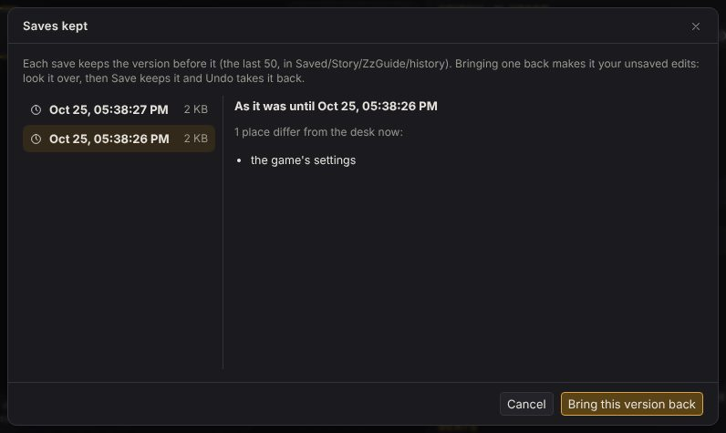
Save is always on purpose: Ctrl+S. Check and Unreal never run on a version that isn't saved.
18Into Unreal
When a stretch of the game plays right on the desk, Unreal saves, runs the checks, records the Watch's blocking and builds the game in the editor: every level one to one, the scenes as you blocked them. The desk's storyboard and blocking are the reference the Unreal build must match.
19Every key
The ? button in the toolbar shows these in the desk too.
| The desk | |
| Ctrl+K | go to anything |
| Ctrl+S | save |
| Ctrl+Z · Ctrl+Shift+Z | undo · redo (outside a text box) |
| Ctrl+C · V · D | copy · paste · duplicate what's picked: cards, lines, beats, commands |
| Delete · Esc | remove what's picked · let go of it |
| right-click | a card, the board, an act, a line, a command, the stage: what you can do there |
| The flow board | |
| drag a card · its ● | move it · connect it (onto empty space: a new card) |
| Shift+drag · Ctrl+click | pick several: a box, or one more |
| double-click | empty space: a new card there; a folded act: open it |
| F · M | fit everything · the minimap |
| wheel · drag the background | zoom · pan |
| A scene | |
| click a row · drag its grip | open its tabs · reorder |
| type under the script | “Name: words” then Enter adds a line; “(a note)” notes the last one |
| drop a file on a row | its take |
| the waveform | drag the in and out (Shift: no snapping) · the body bar · double-click plays |
| the timeline | click or drag to scrub · drag a cue · double-click adds one |
| The stage | |
| drag someone | onto a mark, or a new mark there |
| right-click | the floor: put someone here, the player here, a new mark · someone: the camera follows them |
| Free cam | drag to orbit, wheel to zoom; drag the orange marker to move the player |
| The Watch | |
| WASD · mouse | move · look (click the view to lock the mouse) |
| left click · Shift | use (open, take, read, sit, hide...) · run |
| E · wheel · G | the inventory, shown or hidden · turn it · put down the one in your hand |
| C · F · Esc | crouch · the flashlight (once you have one) · pause |
| hold the left button | scrub a stain away |
| F9 | the debug panel |
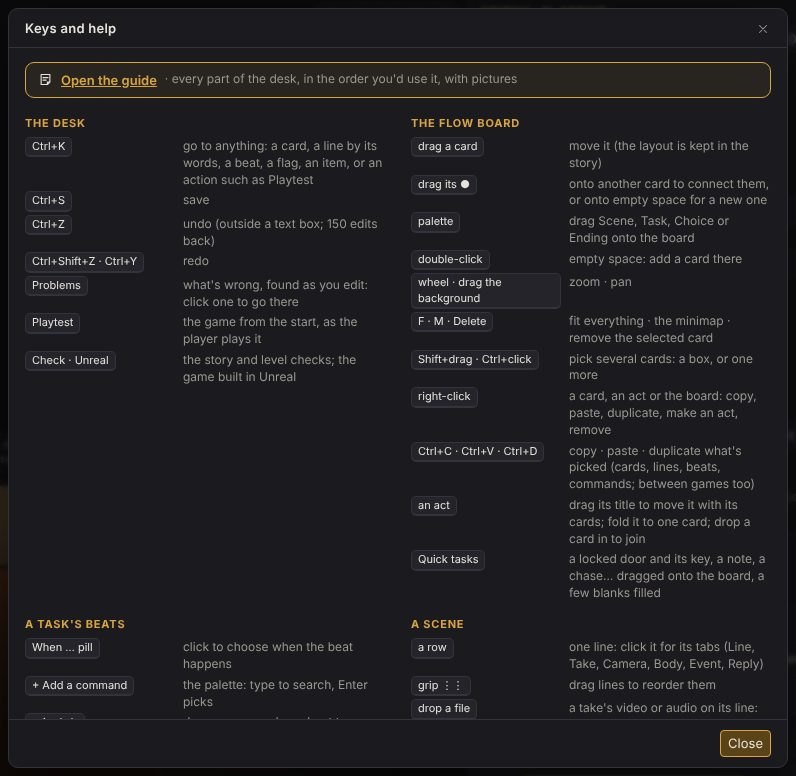